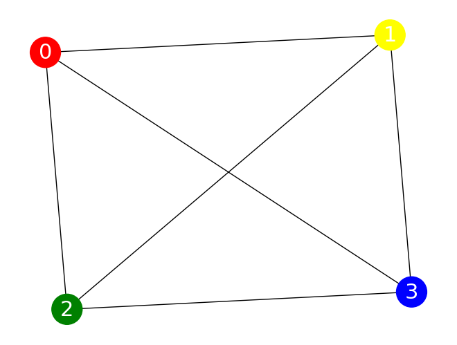
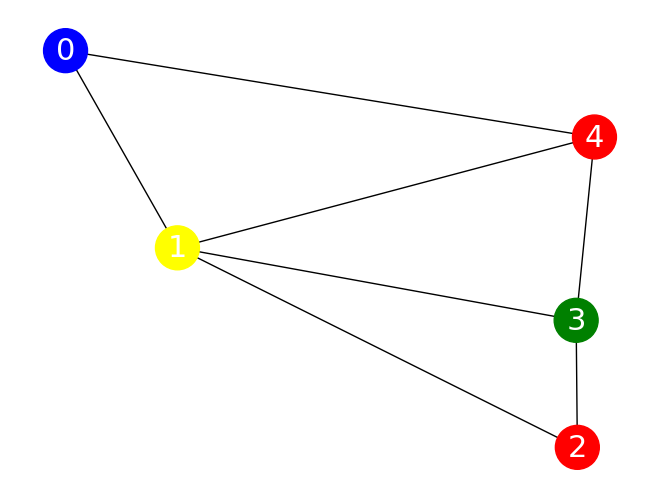

Max-\(\kappa\)-Colorable Subgraph QAOA Implementation#
The Max-\(\kappa\)-Colorable Subgraph involves finding the largest subgraph of a given graph that can be colored using \(\kappa\) colors, such that no two adjacent nodes share the same color.
MaxCut is considered as a special case of graph coloring for \(\kappa=2\) and therefore, after solving it with QAOA in the previous tutorial, provides us with a solid starting point for understanding graph coloring. The skills and knowledge you’ve gained are directly applicable here, but we’ll also introduce new concepts and techniques to tackle the added complexity of using more than two colors.
You will explore how to formulate the M-\(\kappa\)-CS problem, implement the algorithm, and interpret the results. Along the way you’ll likely realize that programming in Qrisp isn’t a mundane black-and-white task, but rather a vibrant experience offering a whole spectrum of possibilities.
From QuantumVariable to QuantumColor#
We start the tutorial by coding the QuantumColor class, which is a custom QuantumType implemented and helps with tackling the Max-\(\kappa\)-Colorable-Subgraph problem. It provides flexibility in choosing encoding methods and leverages efficient data structures like QuantumArrays to enhance computational performance. Here is how to create a custom QuantumVariable class yourself to help you make your problem more compact.
In order to create your customized QuantumVariable, one first needs to import the QuantumVariable class. As mentioned before, using the QuantumArray class leads to some shortcuts so let’s import it as well. Before defining the class and functions within the class let’s think about how one can describe or encode colors using strings of bits:
One approach is to represent colors as an array where only one element is 1 and the rest are 0. For instance, if there are four colors, red, green, blue, and yellow, they can be represented this way as [1, 0, 0, 0], [0, 1, 0, 0], [0, 0, 1, 0], and [0, 0, 0, 1]. This is called the one-hot encoding.
Another approach is to represent colors with a unique binary number. In the case of the same four colors, they can be represented, for example, as [0, 0], [0, 1], [1, 0], and [1, 1], respectively. This encoding scheme is called binary encoding.
In the code block below, we can define the initialization function __init__ as well as find a way to tell our quantum algorithm which color is encoded with our array. In other words, we need to define a decoder function that will decode the color for a given index i. In our case, we use the one-hot encoding scheme as default.
[1]:
from qrisp import QuantumArray, QuantumVariable
import numpy as np
class QuantumColor(QuantumVariable):
def __init__(self, list_of_colors, one_hot_enc=True):
self.list_of_colors = list_of_colors
self.one_hot_enc = one_hot_enc
if one_hot_enc:
QuantumVariable.__init__(self, size=len(list_of_colors))
else:
QuantumVariable.__init__(
self, size=int(np.ceil(np.log2(len(list_of_colors))))
)
def decoder(self, i):
if not self.one_hot_enc:
return self.list_of_colors[i]
else:
is_power_of_two = (i & (i - 1) == 0) and i != 0
if is_power_of_two:
return self.list_of_colors[int(np.log2(i))]
else:
return "undefined"
The else condition returning “undefined” can come in extremely handy since it functions as an intuitive eye-test in the upcoming MkCS QAOA implementation. If any result of the simulation is “undefined”, like [1, 0, 1, 0] for example, we know that something went wrong within our code.
The choice of encoding method has implications for how colors are represented in the quantum computation. Our simple QuantumColor class only needs a list of colors and a flag indicating the preferred encoding method as arguments. The breakdown above is meant to serve as inspiration for you, showcasing how custom QuantumVariables tailored to one specific problem can make life at least a little qubit more colorful.
Having already implemented this custom QuantumVariable, you can also simply import it via from qrisp.qaoa import QuantumColor. In the example above we define a quantum box of crayons containing different colors. If one would then like to draw a meadow, one can take the green one out of the box and initialize a color using box_of_crayons[:] = "green".
Run the code box below and see how that works with our custom QuantumVariable.
[2]:
from qrisp.qaoa import QuantumColor
color_list = ["red", "orange", "yellow", "green", "blue", "violet"]
box_of_crayons = QuantumColor(color_list)
box_of_crayons[:] = "green"
print(box_of_crayons.qs)
QuantumCircuit:
---------------
box_of_crayons.0: ─────
box_of_crayons.1: ─────
box_of_crayons.2: ─────
┌───┐
box_of_crayons.3: ┤ X ├
└───┘
box_of_crayons.4: ─────
box_of_crayons.5: ─────
Live QuantumVariables:
----------------------
QuantumColor box_of_crayons
With the knowledge we obtained above under our sleeve the only thing left to do now is is to tackle the colorless Max-\(\kappa\)-Colorable Subgraph and implement QAOA in style!
M\(\kappa\)CS meets QAOAProblem#
Let’s revisit the recipe from the previous tutorial; to implement QAOA with QAOAProblem one needs to drumroll please…
define the CLASSICAL COST FUNCTION of the problem,
define the INITIAL STATE if it is not the superposition, which in the case of graph coloring indeed is not,
define COST OPERATOR aka PHASE SEPARATOR (or use the ones specified in From QAOA to QAOA), and
select MIXER from the assortment we provide and list here.
Time to prepare the ingrediends starting with defining a graph and the available colors we’d like to color the graph with.
[3]:
import networkx as nx
G = nx.Graph()
G.add_nodes_from([0, 1, 2, 3])
G.add_edges_from([[0, 3], [0, 1], [0, 2], [1, 3], [1, 2], [2, 3]])
num_nodes = len(G.nodes)
color_list = ["red", "blue", "yellow", "green"]
Before defining the classical cost function cl_cost_function(meas_res) for M\(\kappa\)CS we need to think about the objective (mkcs_obj). Since we’re trying to color a graph in a way to prevent neighboring nodes being the same color, we will reward the instances where they are in fact not the same color. To increase the contrast between optimal and less optimal solutions we shall use multiplicaton for the aforementioned reward instead of simple addition. This little trick can
already improve the results significantly instead of using the standard approach.
After iterating over all edges of graph G, the objective function mkcs_obj returns an integer value of the free energy objective function. The remaining of the definition
[4]:
def mkcs_obj(color_array, G):
cost = 1
for pair in list(G.edges()):
if color_array[pair[0]] != color_array[pair[1]]:
cost *= 4
# Instead of
# cost += 1
return -cost
is similar to the one for MaxCut in the sense that calculates the relative energy in respect to the probability for each sample. Iteration over all items to calculate the objective function for current measurement is the same as in the MaxCut implementation, as is returning the energy calculated using the mkcs_obj objective funcion. Note that we don’t need to normalize, since the measurement results are probabilities rather than counts.
[5]:
def cl_cost_function(meas_res):
energy = 0
for meas, prob in list(meas_res.items())[::-1]:
obj_for_meas = mkcs_obj(meas, G)
energy += obj_for_meas * prob
return energy
As spoiled before, the superposition state is not the ideal initial state in this particular case. In principle a superposition state is viable, however, it needs to respect the one-hot encoding constraint. Instead we simply pick a random initial coloring of all the nodes and trust the QAOA to do the rest.
To do this one first needs to import randomness and define the quantum argument qarg, which is in this case a QuantumArray of QuantumColors. After setting the initial set to a random coloring, we then define a function that sets all elements in qarg to the initial state.
[6]:
import random
qarg = QuantumArray(qtype=QuantumColor(color_list), shape=num_nodes)
init_state = [random.choice(color_list) for _ in range(len(G))]
def initial_state_mkcs(qarg):
qarg[:] = init_state
return qarg
Following along with the recipe in hand is taking care of the coloring operator. For simplicity and code readability reasons we first define apply_phase_if_eq, which indeed applies a phase if the colors of two arguments are matching. Having defined this, constructing the coloring operator is as easy as going through the list of all edges in our graph.
[7]:
from qrisp import cp, cx, mcp
def apply_phase_if_eq(qcolor_0, qcolor_1, gamma):
if qcolor_0.one_hot_enc != qcolor_1.one_hot_enc or len(qcolor_0) != len(qcolor_1):
raise Exception("Tried to compare QuantumColors with differing encodings")
if qcolor_0.one_hot_enc:
for i in range(qcolor_0.size):
# If the i-th qubit is "1" for both variables they represent the same color
# In this case the cp gate applies a phase of 2*gamma
cp(2 * gamma, qcolor_0[i], qcolor_1[i])
else:
# If both quantum variables are in the same state the following cx gates will
# put qcolor_1 in the |0> state
cx(qcolor_0, qcolor_1)
# We apply the phase 2*gamma to the |0> state using a multi-controlled phase gate
mcp(2 * gamma, qcolor_1, ctrl_state=0)
# Revert the action of the cx gate
cx(qcolor_0, qcolor_1)
def create_coloring_operator(G):
def coloring_operator(quantumcolor_array, gamma):
for pair in list(G.edges()):
apply_phase_if_eq(
quantumcolor_array[pair[0]], quantumcolor_array[pair[1]], gamma
)
return coloring_operator
We can see the advantage of the one-hot encoding: It might require more qubits but the comparison of two colors only requires one cp gate per color. The binary encoding requires significantly less qubits but also an mcp gate, which is more costly, especially on near-term hardware.
To season everything we need to decide on which mixer to choose to allow the transitions between different colorings. As proposed in QAOAnsatz we will use the XY mixer aka the parity ring mixer. As for the binary encoding the X mixer we used in MaxCut works fine as well.
[8]:
from qrisp.qaoa import XY_mixer, RX_mixer
def apply_XY_mixer(quantumcolor_array, beta):
for qcolor in quantumcolor_array:
XY_mixer(qcolor, beta)
return quantumcolor_array
Putting all the ingredients we just prepared into the methaphorical oven, which is in this case actually the QAOAProblem class, we can now simply run the algorithm following the same steps as in the previous tutorial before a marvelous masterpiece - the correctly colored graph - manifests into existence.
Let’s speedrun through the steps we already got familiar with in the previous tutorial:
define the depth \(p\) of our QAOA algorithm.
create the
coloring operatorcreate the
coloring_instanceproblem instance withQAOAProblemset initial state using the
.set_init_functionmethodrun QAOA using the
.runmethoddisplay the solution.
And most importantly: whisper the magic word: QRISPIFYYY
[ ]:
from qrisp.qaoa import QAOAProblem
from operator import itemgetter
depth = 3
coloring_operator = create_coloring_operator(G)
coloring_instance = QAOAProblem(coloring_operator, apply_XY_mixer, cl_cost_function)
# Use RX mixer for binary encoding
# coloring_instance = QAOAProblem(coloring_operator, RX_mixer, cl_cost_function)
coloring_instance.set_init_function(initial_state_mkcs)
res = coloring_instance.run(qarg, depth, max_iter=25)
best_coloring, best_solution = min(
[
(mkcs_obj(quantumcolor_array, G), quantumcolor_array)
for quantumcolor_array in res.keys()
],
key=itemgetter(0),
)
print(f"Best string: {best_solution} with coloring: {-best_coloring}")
best_coloring, res_str = min(
[
(mkcs_obj(quantumcolor_array, G), quantumcolor_array)
for quantumcolor_array in list(res.keys())[:5]
],
key=itemgetter(0),
)
print("QAOA solution: ", res_str)
best_coloring, best_solution = (mkcs_obj(res_str, G), res_str)
colors = [res_str[node] for node in G.nodes()]
nx.draw(
G,
with_labels=True,
font_color="white",
node_size=1000,
font_size=22,
node_color=colors,
)
Best string: ['red' 'yellow' 'green' 'blue'] with coloring: 4096
QAOA solution: ['red' 'yellow' 'green' 'blue']

🎉 aaand time! Whew, a new personal best! 🎉
One can now benchmark the approach using the benchmark method following the same procedure as explained in the MaxCut QAOA tutorial, and conquer a complex problem instance like the Max-\(\kappa\)-Coloring Subgraph using Qrisp and the plethora of useful functionalities and customizabilities it brings.
Summary and motivation#
To sum up:
you created a colorful custom QuantumType known as QuantumColor;
you explored two different color encoding techniques: one-hot encoding and binary encoding;
a crucial step that cannot be overstated is the importance of elegantly specifying a complex problem instance using the four-step-recipe we provided before running QAOA using the
.runmethod of theQAOAProblemclass.
It’s pedagogical to, similarly to what we have done in the previous MaxCut tutorial, provide a condensed code block of the full M\(\kappa\)CS QAOA implementation using our predefined functions and show how elegantly one can tackle this complex problem.
[11]:
from qrisp.qaoa import (
QuantumArray,
QuantumColor,
QAOAProblem,
mkcs_obj,
create_coloring_operator,
create_coloring_cl_cost_function,
apply_XY_mixer,
)
import random
import networkx as nx
from operator import itemgetter
depth = 3
G = nx.Graph()
G.add_edges_from([[0, 1], [0, 4], [1, 2], [1, 3], [1, 4], [2, 3], [3, 4]])
num_nodes = len(G.nodes)
color_list = ["red", "blue", "yellow", "green"]
init_state = [random.choice(color_list) for _ in range(len(G))]
qarg = QuantumArray(qtype=QuantumColor(color_list, one_hot_enc=True), shape=num_nodes)
mkcs_onehot = QAOAProblem(
create_coloring_operator(G), apply_XY_mixer, create_coloring_cl_cost_function(G)
)
mkcs_onehot.set_init_function(lambda x: x.encode(init_state))
res_onehot = mkcs_onehot.run(qarg, depth, max_iter=25)
best_coloring, best_solution = min(
[
(mkcs_obj(quantumcolor_array, G), quantumcolor_array)
for quantumcolor_array in res_onehot.keys()
],
key=itemgetter(0),
)
best_coloring_onehot, res_str_onehot = min(
[
(mkcs_obj(quantumcolor_array, G), quantumcolor_array)
for quantumcolor_array in list(res_onehot.keys())[:5]
],
key=itemgetter(0),
)
colors = [res_str_onehot[node] for node in G.nodes()]
nx.draw(
G,
with_labels=True,
font_color="white",
node_size=1000,
font_size=22,
node_color=colors,
)

After successfully coloring the graph, you now possess the sacred knowledge of understanding how to implement QAOA in Qrisp to solve complex optimization problems.
But wait, there’s more! Let us quickly invite you to continue with the next tutorial in this QAOA section titled Channelled Constrained Mixers where you will learn how to construct and utilize channelled constrained mixers for QAOA - a novel concept which will be detailed in an upcoming scientific publication. It also includes a cool intuitive comparison of the whole QAOA mixing process to the well known multi-slit experiment!
Without further ado: let’s test Qrisp to its limits and MIX IT UP!